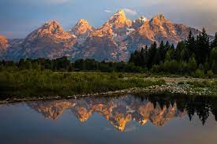
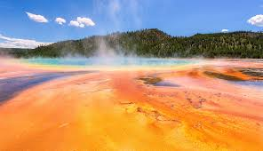
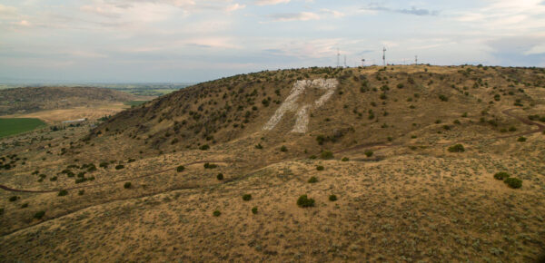
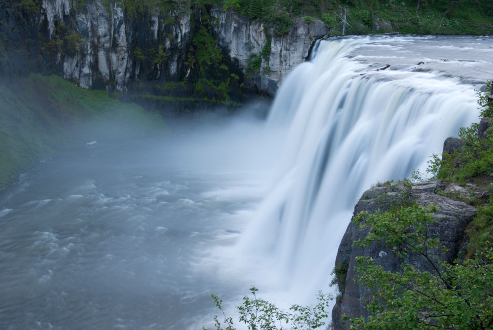
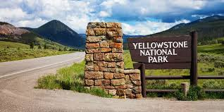
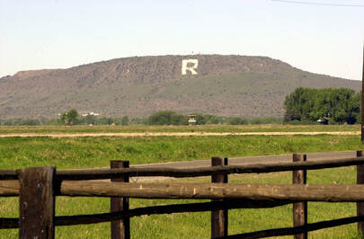

Place to Visit
Hover over to see the name.

Yellowstone

Grand Teton

R Mountain

Messa Fall
“Life is either a daring adventure or nothing at all.”

Yellow Stone
83 Miles Away from Rexburg
On March 1, 1872, Yellowstone became the first national park for all to enjoy the unique hydrothermal and geologic features. Within Yellowstone's 2.2 million acres, visitors have unparalleled opportunities to observe wildlife in an intact ecosystem, explore geothermal areas that contain about half the world’s active geysers, and view geologic wonders like the Grand Canyon of the Yellowstone River.
Grand Teton
85 Miles Away From Rexburg
Rising above a scene rich with extraordinary wildlife, pristine lakes, and alpine terrain, the Teton Range stands as a monument to the people who fought to protect it. These are mountains of the imagination. Mountains that led to the creation of Grand Teton National Park where you can explore over two hundred miles of trails, float the Snake River, and enjoy the serenity of this remarkable place.

“You have to do something you’ve never done to have something you’ve never had.”
Elizabeth Franklin
R Mountain
17 Miles Away From Rexburg
The “R” mountain, also known as the Menan Butte is a famously known hike among locals and students that live in Rexburg, ID. It is not really a mountain but an inactive volcano. Hikers will enjoy this landmark with 2 trailheads to explore seeing wildlife and plantlife most of the year. Don’t be deceived by the shortness of the hike and wear flip flops. Sturdy shoes are necessary and you might want to bring water and a sack lunch so when you reach the top you can enjoy the view of the valley.